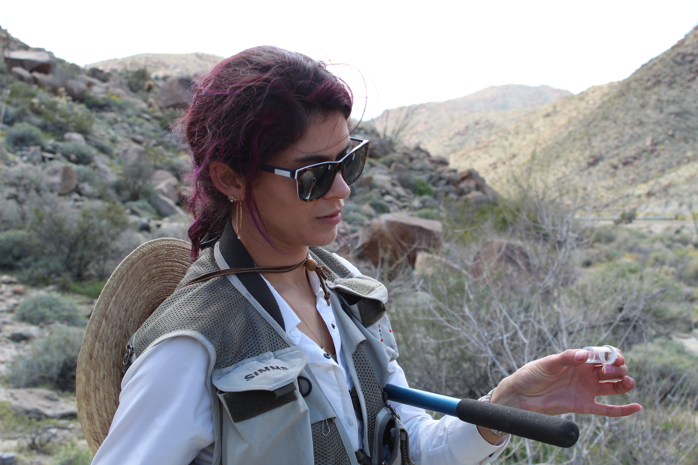
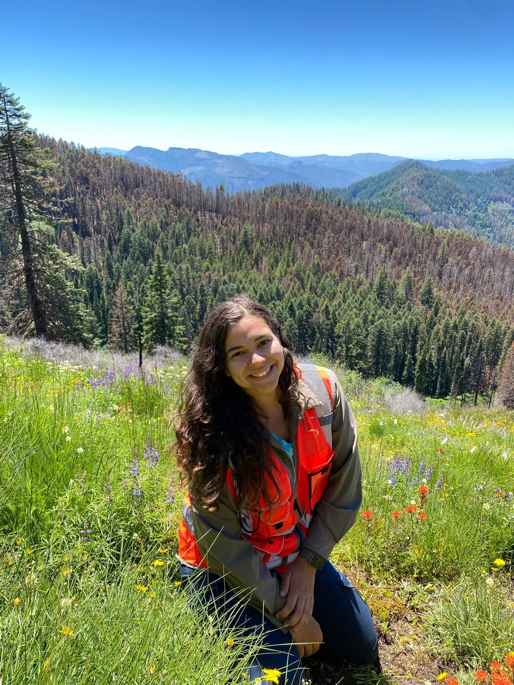
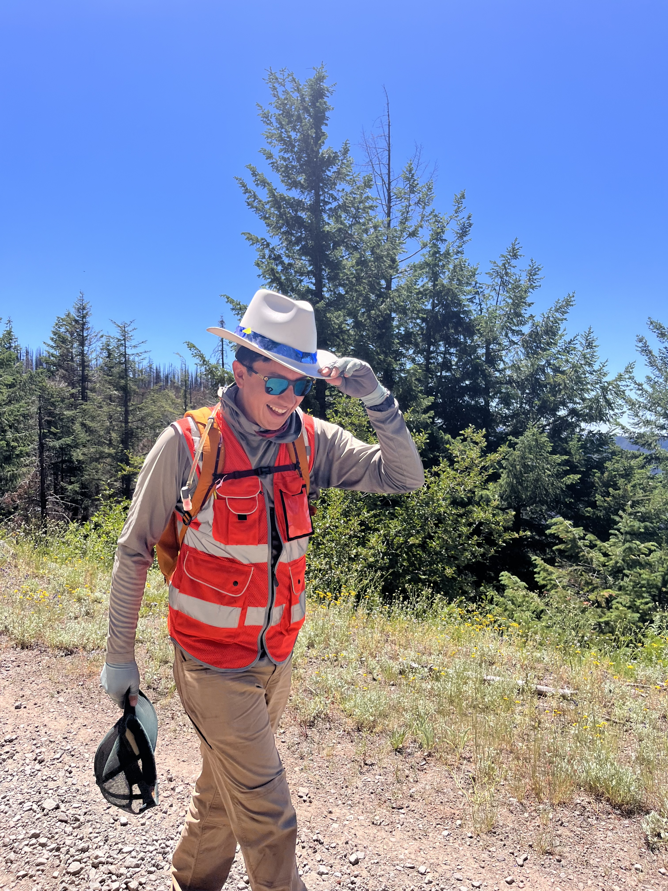
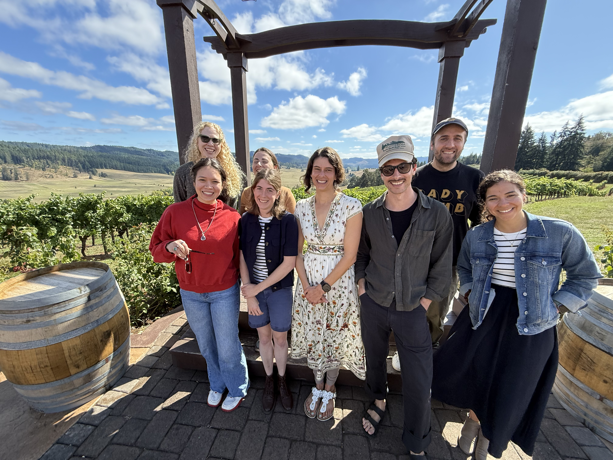
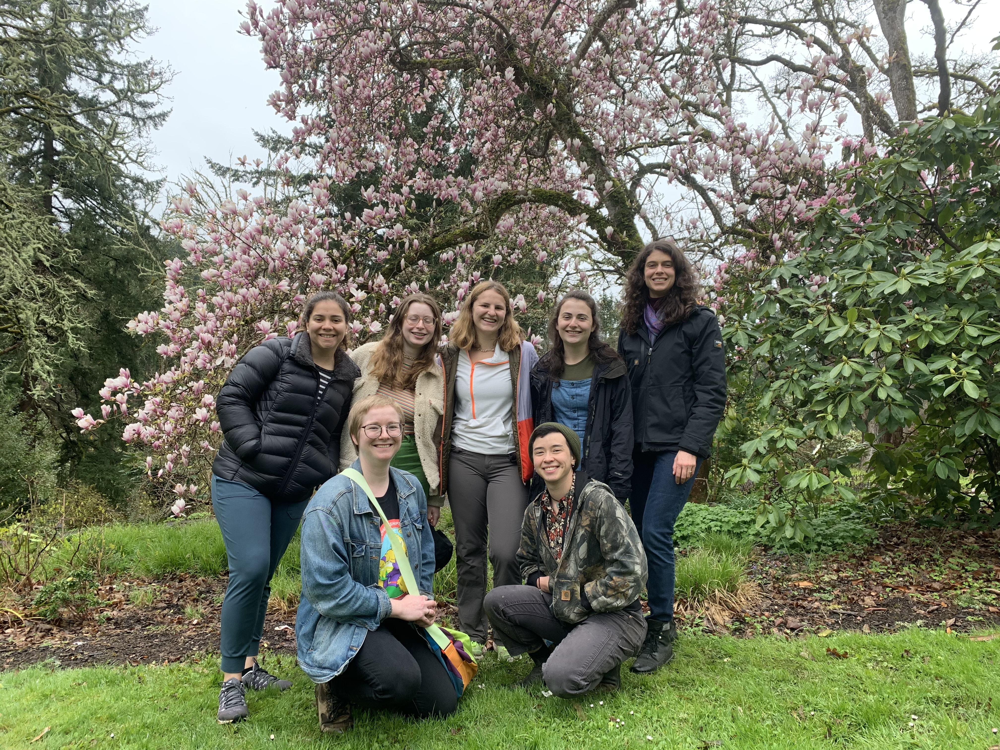
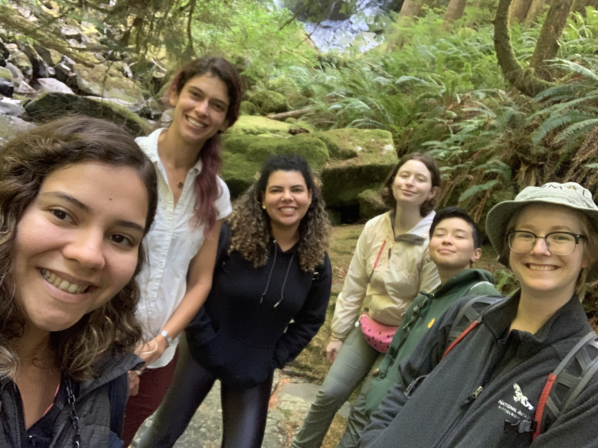
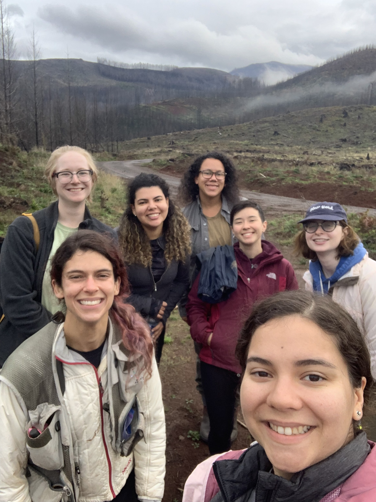
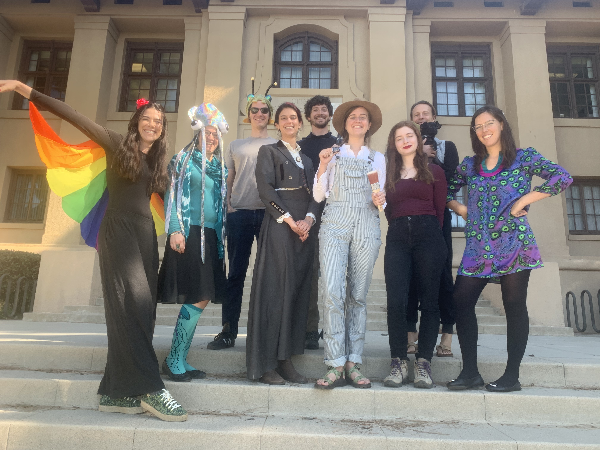
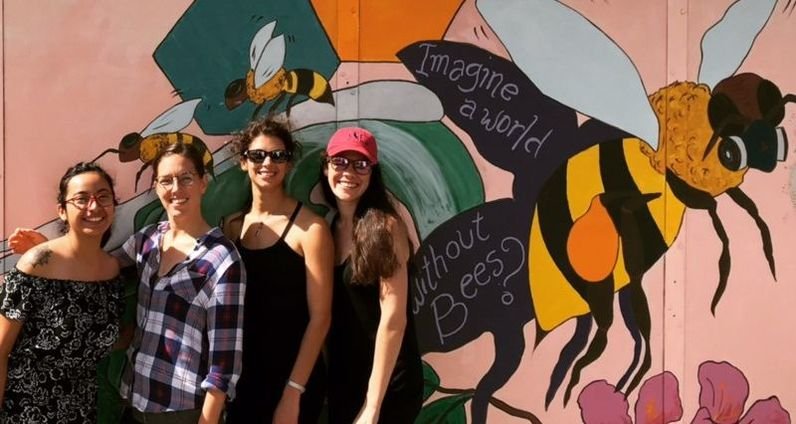
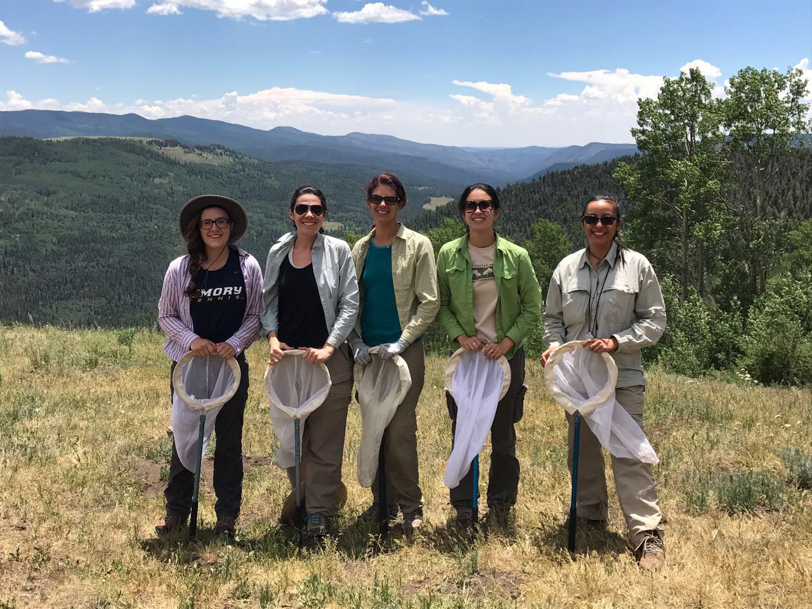

Lab members
Lauren C. Ponisio
Principal investigator
Lauren studies how species interactions maintain biodiversity and how ecological mechanisms can be used to restore diversity in human-modified systems. Her work combines modeling, synthesis, and field ecology with a strong commitment to reproducible and open science.
She earned her PhD at the University of California, Berkeley and her MS and BS at Stanford University. Her research has ranged from bee-friendly agricultural practices and pollinator community assembly to fire ecology, managed forests, disease, and long-term change in wild bee communities.

Field research in California.
Current members

Nicole Martínez-Llaurador
Nicole's general interest is in ecological interactions, entomology, and botany. She is from Puerto Rico, where she studied the effects and changes in community dynamics on plant–pollinator interaction networks caused by hurricanes. Nicole is mainly interested in plant–pollinator interactions and how those interactions can be affected by different variables such as invasive species, natural disasters, and anthropogenic disturbances.
She is also interested in how pollinators, as drivers of natural selection, can influence breeding systems in plants.

Rose McDonald
Rose joined the Ponisio Lab in Fall 2022 after working as a research technician at Montana State University, where she studied honey bee host–pathogen interactions. She previously worked as a field technician at the University of Wisconsin–Madison, analyzing the impact of landscape composition on wild bee populations. She received her bachelor's degrees in biology and history from UMass Amherst in 2021.
For her PhD, Rose is reconstructing wild pollinator habitats within managed forests and is also interested in studying the underlying drivers of pathogen spread in wild bee communities.

Alejandro Santillana
Alejandro's research focuses on how environmental variation shapes plant–pollinator interactions across space and time. Using field-based sampling and network approaches, he investigates the relative roles of species turnover and interaction rewiring in driving network change, with the goal of understanding how mutualistic systems respond to environmental change.
Alejandro's work encompasses plant–pollinator communities from high-elevation meadows in the southwestern U.S. (Sky Islands) and resurveyed sites in California, where communities are being sampled more than 50 years after the original surveys.
Megan Fenner
Megan gained interest in pollinators as an undergraduate at Colorado State University, where she used radio telemetry to track bumble bee movement. In 2025, Megan joined the Ponisio Lab, where she continues to pursue her interest in pollinator behavioral complexity through studying how wildfires shape plant–pollinator interaction network dynamics.
She is interested in understanding how wildfires shape pollinator trait diversity as well as functional diversity, and hopes to generate better understanding of fire's long-term impacts on pollinator populations. Megan conducts research at H. J. Andrews Experimental Forest, where she samples pollinators at LTER meadow complexes.
Lauren Berger
Lauren Berger is a graduate researcher in the Ponisio Lab, where she studies plant communities in post-fire landscapes of the western Cascades. Before joining the lab, she spent over two years as a Plant Materials Technician at the Institute for Applied Ecology, contributing to large-scale seed collection efforts across Oregon and deepening her focus on restoration and conservation ecology. She received her bachelor's degree in Literature from UC Santa Cruz in 2019.
Her research focuses on the Holiday Farm Fire, where she investigates how wildfires in managed forests shape plant community diversity and functional trait composition.
Jacob Swanson
Jacob earned his Bachelor of Science in Environmental Science from Portland State University before going on to work as a Research Assistant at Washington State University, where he led projects examining how microhabitat drives Western monarch butterfly performance in systems with prolonged heat and drought. That work directly informed conservation strategies across the arid western U.S.
His research interests span pollination biology, restoration ecology, and conservation science, with most of his work taking place in lowland prairie systems across the Pacific Northwest. Through this research, he aims to develop actionable strategies for restoring and conserving plant–pollinator communities.
His current research evaluates how prescribed fire restoration shapes plant–pollinator community dynamics, as well as which mutualistic plant–pollinator networks most effectively maintain biodiversity. Jacob collaborates closely with regional partners including Friends of Buford Park & Mt. Pisgah, Willamalane Parks & Recreation, and Quamash EcoResearch.
Lab alumni
Former graduate students, postdocs, research staff, visiting scholars, and undergraduate researchers. Names link to current personal or professional pages where available.
Jesse Fan Brown
Rebecca Hayes
Jocelyn Zorn
Kaysee Arrowsmith
Community ecologist studying variation in plant–pollinator interactions
Lab through the years
A few snapshots of the lab across institutions, field seasons, and generations of students and researchers.






